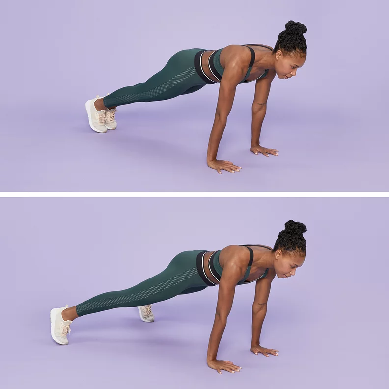
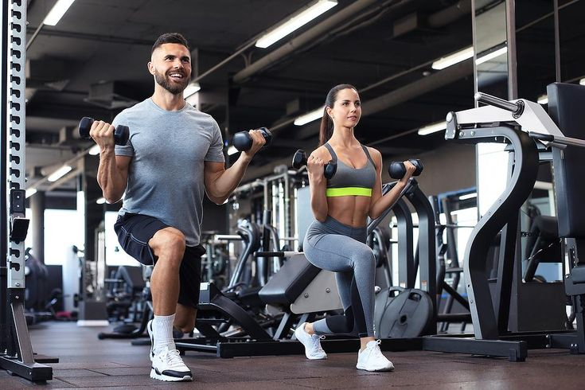

How to build muscle
Let's start with the basics: Your workout routine should include a mix of cardio and strength training. Strength training can involve some hand weights or just your body weight.
As you get stronger and need more of a challenge, weights will be your new best friend. But don't sleep on cardio. It's still a necessary (and sometimes evil) part of any exercise plan. For optimal muscle-building, focus on HIIT cardio workouts a few times a week.
So how often should you work out? According to a 2016 research review, strength training at least 2 days a week is ideal to grow your muscles. So start with 2 or 3 days of full-body weight training, 2 days of cardio, and 2 days of rest.
As you get stronger, you can add a fourth weight day and try splitting the days between upper- and lower-body workouts. And be sure to reserve at least 2 days per week to let your body rest and recover. Your plan could look something like this:
| Fitness level | Exercises |
|---|---|
| newbie | 2–3 days a week full-body strength training + 2 days cardio |
| novice | 3–4 days a week split strength training + 3 days cardio |
| pro | 4–5 days a week strength training + 3 days cardio (3 days on, 1 day off) |
Bodyweight exercises to build muscle at home
You actually don't have to pump iron to get stronger. All you need is yourself and some creativity to get those muscles moving.
Chest
1. Push-up: 3-6 sets of 6-12 reps
The push-up is one of the most efficient bodyweight exercises you can do to build strength in your chest and triceps. But it also gives your shoulders, core muscles, lower back, and lower body a workout.How-to: Lie facedown and place hands on the floor, slightly wider than shoulders. Push up to lift shoulders, torso, and legs until arms are fully extended. Only your hands and toes should be touching the floor. Slowly lower your body until chest almost touches the floor, then repeat.
Pro tip:Push-up variations are nearly endless. If you are a beginner, you can start with wall push-ups or knee push-ups. Feeling advanced? Give pike push-ups a try.
2. Burpee: 6 per minute for 15 minutes
Need a more explosive exercise? The burpee may be the ultimate bodyweight exercise mash-up, working your chest, core, arms, back, glutes, and legs for a full-body cardio workout.
How-to: From a standing position, lower yourself into a squat and put both hands on the floor, just wider than your feet. Jump feet back into a plank position. Do a push-up, returning to the plank position. Draw your legs back up into a squat, then jump up explosively with your hands above your head. Repeat.
3. Pull-up: 3 sets of 2-5 reps
The pull-up can be intimidating, especially when you are just starting out. But it’s a great bodyweight exercise to work your shoulders, upper back, and biceps. Start with just a few reps and work your way up as you get stronger.
How-to:Grab the pull-up bar with an overhand grip, wrapping your thumbs around the bar. “Play dead” — start in a dead hang from the bar. Squeeze the bar with your hands and engage the muscles of your upper body and core. Pull up until chin clears the bar. Slowly lower yourself back into the dead-hang position. Repeat.
Pro tip:For pull-ups at home, you can buy a portable pull-up bar that fits in a doorframe.
Arms
Plank-up: 3 sets of 5-10 reps
Doing any type of plank exercise will make your arms stronger, but doing plank-ups is especially effective for strengthening the triceps and biceps muscles in your arms.
How-to:Start in plank position, with elbows and toes on the floor, core engaged, and torso elevated. Raise yourself into a push-up position by extending one arm at a time, keeping your body straight. Lower onto your elbows one arm at a time. Repeat.
Triceps dip: 2 sets of 10-12 reps
You'll need a chair, box, ledge, bench, or staircase to do triceps dips. This move will quickly strengthen your triceps (and your pecs!), which tend to need a targeted workout to grow.
How-to:Start seated in a chair (or on a step, etc.). Grab the edge of the chair with hands on either side of hips. Lift up and out into a hovering position beyond the chair edge. Extend legs until mostly straight. Slowly lower yourself toward the floor until elbows are roughly parallel with shoulders. Push down into your hands to raise back up until your arms are straight again. Repeat.
3. Inchworm: 3 sets of 4-6 reps
This bodyweight move is (almost) as much fun as it sounds. This is one creepy-crawly exercise that will have you feeling like a little kid again while building your triceps, shoulders, chest, abs, glutes, and quads.
How-to:Stand with knees slightly bent. Bend at your hips and slowly reach down and touch your toes. Place hands on the floor, then “crawl” them away from your torso until you’re in a plank position. Take insect-size steps forward until feet meet hands. Repeat.
legs
1. Step-up: 3 sets of 15 reps (each side)
Got a staircase? Or a box? Then you can do this leg workout. Step-ups are a simple beginner exercise that can give you stronger quads, glutes, and hamstrings. Just take one step at a time.

How-to:Go to the stairs in your home or, if you don't have a staircase, place a sturdy box in front of you. Step up onto the box or the first stair with your right foot, then your left. Reverse, stepping back down with right foot, then left. Repeat, switching the leg you start with each time.
Pro tip:For added difficulty, raise your knee toward your chest when you take the second step onto the box or stair.
2. Lunge: 3 sets of 15 reps (each side)
There are dozens of lunge variations you can do, but even just a classic lunge builds up your quads and glutes. Plus, it strengthens your hamstrings.
How-to: From a standing position, take a big step forward with one leg. Lower your body toward the floor until upper thigh of front leg is nearly parallel to the floor and back knee is just above the floor. Raise up by putting pressure on the heel of your front leg. Repeat by taking that big first step with the opposite leg.
3. Squat: 3-5 sets of 8-12 reps
Squats are popular with weightlifters, which can lead to the misperception that they can be done only with weights. But even squatting with your bodyweight alone can give you strong leg muscles if you do it with good form.
How-to:Stand with feet slightly wider than shoulder width. Extend arms straight with palms facing down. Inhale and push hips back slightly as you bend your knees. Look straight ahead and keep chin up, shoulders upright, and back straight. Squat as low as you comfortably can, aiming to have your hips sink below your knees. Engage your core to push upward explosively from your heels.